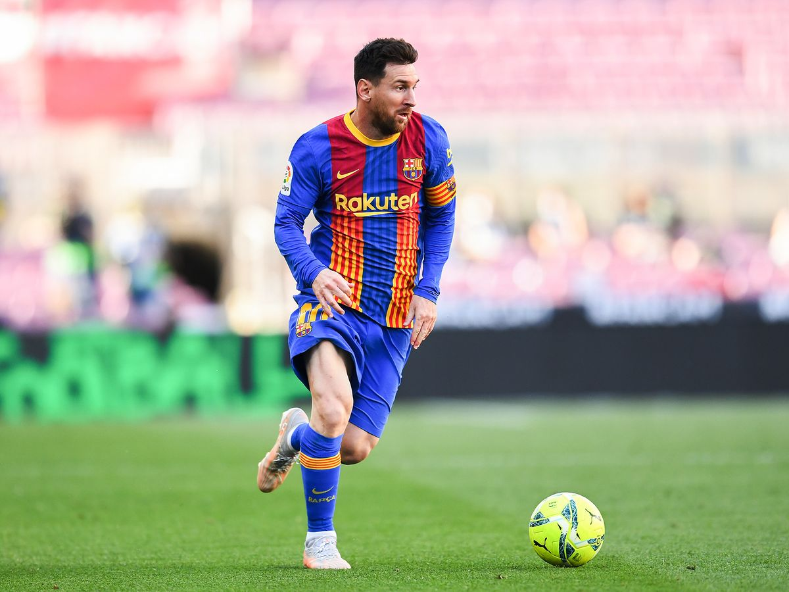
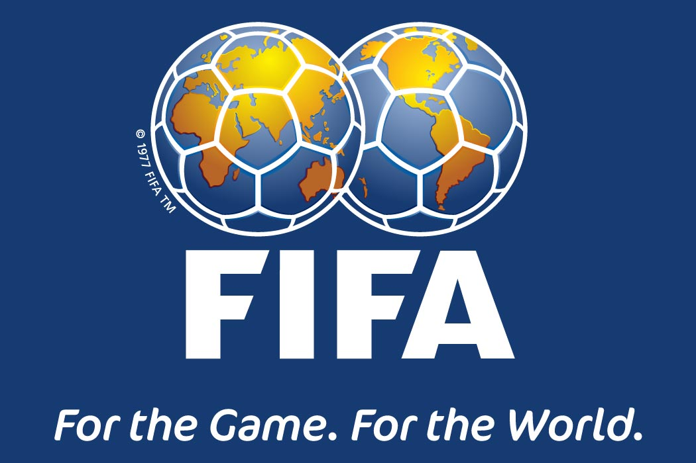

FOOTBALL Blog
 This is my blog page and im here to talk about my favoutite sport which is football.Football was created in 1990 and its the most popular sport in the world. So, football is a game that in which two teams of 11 players strive to manipulate the ball into the other team's goal using whatever part of their bodies excluding their hands and arms. Just the goalkeeper is allowed to touch the ball, and only inside the penalty area surrounding the goal. Both teams have 90 minutes to score as many goals as possible the team with the most goals wins the game. Each team can substitute 3 players that is the maximums substitute that is allowed in the game. The FIFA is the biggest football organization in the world because the host the World cups which is the biggest tournament in the world every country needs to be qualified to participate in the tournament if they don’t, they won’t be qualified. They are 32 countries that get qualified for this tournament and who ever wins they will get the World cup and a gold medal for being first, in the second position they will only get a silver medallion and the country that arrived 3rd in the competition they will get a bronze medal. So, these two pictures I put in my blog this are the best football players in the world their names are Lionel Messi and Cristiano Ronaldo. Messi is an Argentinian football player and Ronaldo is a Portuguese football player and they been rivals for a very long time and they are still rival. Messi and Ronaldo used to play in the Spanish league called LaLiga and they used to play for 2 different clubs Messi used to play for Barcelona and Ronaldo used to play for Real Madrid. These two footballers they change the football game as they are very good at what they do and they inspire me every day to work hard and achieve my dreams.